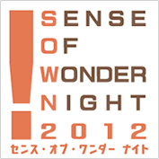

- Organized by
- Computer Entertainment Supplier's Association / Nikkei Business Publications, Inc.
- Cooperation by
- International Game Developers Association Japan Chapter (IDGA Japan)
How to apply
| Deadline | Sunday, July 8 ＜at local time＞ 2012 |
|---|---|
| Application Method | By e-mail sown-app@nikkeibp.co.jp |
| Qualification | Open to all individuals regardless of nationality, age, or occupation (students, game producers, etc.) and to all corporate bodies |
| Results | Entries selected by the Screening Committee and deemed presentable at the TOKYO GAME SHOW 2012 (up to 10 entries) will be regarded as the final SOWN 2012 presentation games. The selected applicants will be directly contacted by the Management Office by mid-August 2012. |
| Inquiries | SOWN Secretariat : sown@nikkeibp.co.jp (Only email enquiries will be accepted) |
Application Outline
All applicants are asked to specify:【Application Deadline：July 8 (Sun)】
- Name (for teams, both the team name and the name of the person representing the team; for corporate bodies, the name of the company and department)
- Contact information, including e-mail address, telephone number, and district of residence (country name for those applying from outside Japan)
- Name of the game
- Three screen shots of the game
- Current degree of completion (%) and estimated degree of completion (%) at the time of presentation at TOKYO GAME SHOW2012
- Game details: -Unique elements that create a new game experience (within 30 words in English) -Outline of the game (within 400 words in English)
- URL on game information:
-moving images of the game(YouTube). ＜recommend＞
-Where the game can be downloaded(private sites accepted) or website where information related to the game is available
-For entries to the Smartphone Category, if the title is already being sold by means of downloading, please provide a free download code usable for 8 times. - Presentation tools: -List of devices and equipment you will be bringing to make the presentation. (SOWN 2012 Management Office will only prepare a standard PC for game demos.)
Note: If you wish to send moving image materials without disclosing them to the public, we recommend you to use the YouTube site (www.youtube.com). Select [Private] in the Privacy setting, and add the user name "SenseOfWonderNight" to the List of Friends to allow access. Information provided will be subject to be posted on the SOWN official website.
Games “Sense of Wonder Night” is Intended For
Games of any genre, platform, language, degree of completion, already released or non-released, which meet one or more of the following criteria:
- A game that realizes a totally new, never-seen-before gaming experience
- A game that employs technologies that have not previously been used successfully, such as natural language processing, physics engines, image recognition or gesture control, to present a new kind of experience.
- A game that challenges the common sense of ordinary games
- A game that pursues new ways of gaming expressions, a game which changes the player’s vision of the world after playing and experiencing it.
- A game with emergent features
- A game that brings user’s activities into the game by including features such as AI interactions, different tools and social elements.
- A game that makes people want to play it immediately
- A game that makes everyone think that they want to enjoy the new experience for themselves and feel that they want to treasure it.
- An amazing game
- Any kind of new, eye-grabbing and impressive game!!
Games “Sense of Wonder Night” is NOT Intended For
Games to which the following conditions apply will NOT meet the selection criteria:
- A game in which only the elements comprising the game are the key factor
- A game in which the newness and highlight are focused on the elements comprising the game (such as the background setting, situation, character design, graphics, story, audio, etc.) instead of the game itself.
- A game of a new genre created by combining or rehashing existing genres
- However, a game providing a truly new game experience may be considered for acceptance.
- A game that is new only in targeting a specific user group
- A game will not be deemed as being new and innovative just because it is focused on a specific user group (such as female users or the elderly). However, a game providing a truly new game experience may be considered for acceptance.
- A game created for the purpose of demonstrating a technological innovation, experimental business model, or distribution mechanism
- A game of this kind will not be completely rejected from the screening process but they must demonstrate that it is capable of directly and tangibly providing a new game experience.